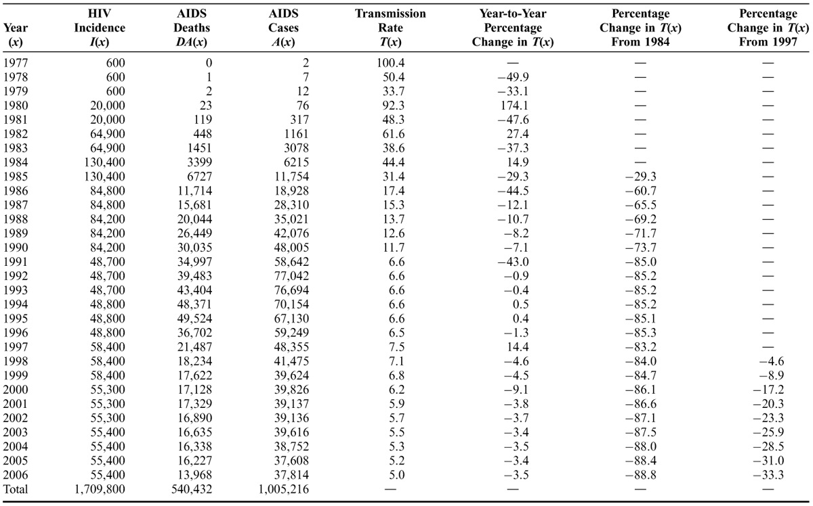
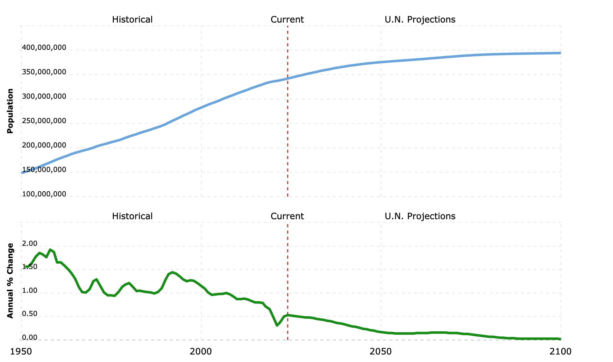
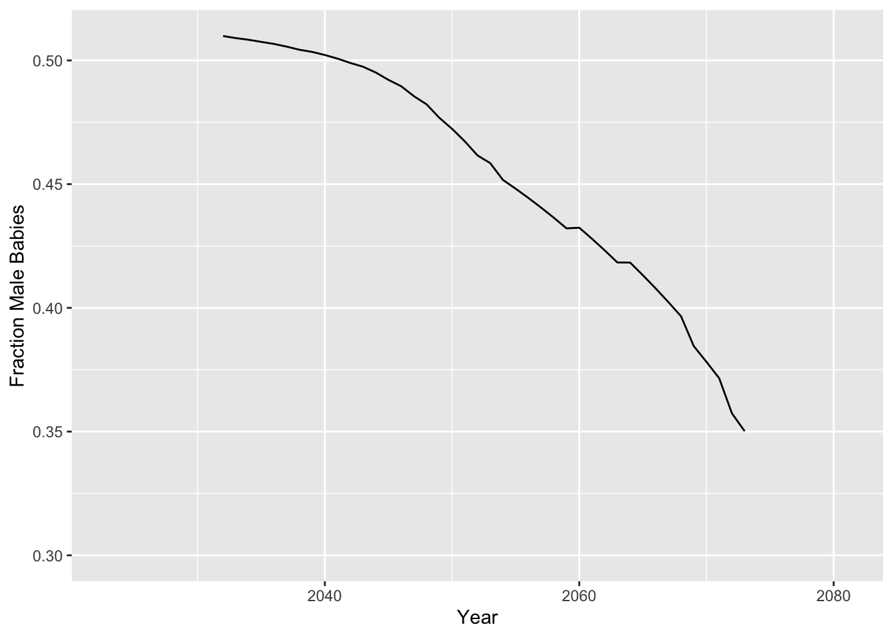

![]()
library("devtools")
install_github("SineadMorris/shinySIR")
library(shinySIR)
run_shiny(model = "SIR")Here’s a population modeling project from the writer Eugene Fischer. He is thinking about writing a follow-up story to his award winning novella, The New Mother, and wanted to know how the fictional disease he invented for The New Mother could impact demographics in the US population 50 years after the events of that story.
The disease in The New Mother is called GDS - Gamete Diploidy Syndrome. It’s a sexually transmitted disease that converts men & women’s gametes, normally haploid, into diploid gametes. As the novella puts it, this means:
Candace Montross’s eggs, like the eggs of a growing number of women around the world, are not haploid. They are diploid. Her eggs are fully capable of implanting in her womb and growing into a baby that shares every one of Candace’s genes, a perfect clone of her only biological parent. They weren’t always that way. Her gametes were altered after she was raped by a man in Houston who also had diploid gametes, and who also wasn’t born that way. They both, now, have GDS. Since diploid sperm are nonviable, Candace’s rapist is a sterile carrier of the disease, which renders all men who contract it sterile. But they can still transmit it to women, whose diploid eggs will put them at risk for pregnancy whenever they ovulate. Their genetically identical children will themselves be carriers, and will similarly begin auto-impregnating when they reach puberty. This is a new form of reproduction which crowds out the old, and only time will tell which method is more robust.
So, what are the population-level impacts of this 50 years later? And how do we model the demographic shift towards more people who are assigned female at birth (AFAB)?
Disease Transmission Model
I first considered using a classic model of disease, the SIR model, to model GDS, and then use logistic growth models to look at the susceptible and infected individuals (individuals without and with GDS, respectively) using different growth parameters.
The SIR model is a differential equation model, with many variants, used to mathematically model the spread of an infectious disease through a population.
I was able to show Eugene effects of changing details of the SIR model very quickly using Sinead Morris’s nice shinySIR package.
However, most SIR model variants proved unsuitable right away, because GDS is a permanent condition - there are no Removed individuals (the “R” in SIR - these can be immune or deceased individuals), and individuals do not become susceptible again (SIS models). There is a maternal effect of this disease, but unlike in MSIR models where there is a brief window of maternally-imparted immunity, babies born with this disease remain infected for life and can pass it on to their offspring in turn.
So, I decided SIR models wouldn’t work for the disease transmission portion of this project.
Sexually Transmitted Disease Models
GDS is an uncurable STD, meaning SIR models weren’t really appropriate.
My next idea was to look up information for other sexually transmitted diseases. I went into a brief cul-de-sac exploring parameters that would influence the number of people GDS was passed on to. To explore that, I needed to know how many sexual partners Americans have on average. This study (Haderxhanaj et al. 2014) looks at the number of sexual partners Americans from ages 15-44 have, using ~20K individuals with data from 2006-2010, and would help for estimating this.
However, this still seemed like it would be much more complicated than necessary as I would then need to include different probabilities of transmission across different demographic bins, and my aim was to build a model quickly without unnecessary complications.
An Empirical Model
My next idea was to see if we could base GDS transmission in our model off of a real sexually transmitted disease that we have empirical data for. My first thought was to look for HIV transmission rates and I quickly found a very nice study of HIV transmission rates from seropositive to seronegative partners (Holtgrave et al. 2009).
From Holtgrave:
An additional helpful measure would be the annual HIV transmission rate (\(T\)). Although various definitions of the HIV transmission rate are possible, we define it here as follows: for every 100 persons living with HIV, the number of HIV infections transmitted to HIV-seronegative partners in 1 year. The transmission rate for a given year, \(x\), is calculated as follows: \(T(x) = [I(x)/P(x)] × 100\) [where \(I(x)\) is the number of new HIV infections in year \(x\), and \(P(x)\) is the prevalence of persons living with HIV in year \(x\)]. Although a simple derivative of \(I(x)\) and \(P(x)\), the transmission rate provides an important gauge of the speed of spread of HIV infection. Further, by examining trends in \(T(x)\) over the course of the epidemic, it provides some crude indication of whether prevention efforts are serving to control the rapidity of the spread of the epidemic.
They provide this beautiful table that I decided to use to simply convert individuals from susceptible to infected as part of a two-population demographic model, at least for the first 30 years of the course of the spread of the disease. Given that the rate of transmission of HIV stabilized in the last 15 years of the study, it seemed reasonable to keep that transmission rate for the last 20 years of our 50 years as a rate of ‘unintended transmission’ for a known disease.

Demographic Model
Next, I considered the population growth model that I should build.
The population growth dynamics are also going to differ between the susceptible and infected populations over the course of 50 years. Crucially, infected individuals produce offspring that also join the infected pool. These individuals may also have a higher number of offspring and begin having children at an earlier age than individuals from the susceptible population, particularly if access to birth control is limited. This could cause a major demographic shift over 50 years, even if the transmission rate between infected and susceptible individuals is very low.
I decided to use two logistic growth models, one for the susceptible population and one for the infected population. In a logistic growth model, the population grows at each time step as an exponential function of r, the population growth rate, and t, the length of the time step. I then overlaid transmission rate estimates from the HIV epidemic on to the yearly demographic estimates to determine how individuals move between these populations: there will be immigration from the susceptible to the infected pool caused by individuals becoming infected with GDS.
When in doubt, use empirical parameter estimates
I again decided to find empirical data to model the population growth rate r in the US. This website has the UN’s estimates for the US growth rate from now until 2102, more than sufficient for our purposes. Given that data and the yearly HIV transmission rate data, each time step, t, will be 1 year, and I will change the r values and T(x) values each year.
Next, I built a table of these values. Remember, I was trying to do this quickly for a very small amount of data, so I just entered values by hand into vectors, then made a dataframe of the resulting vectors.
── Attaching core tidyverse packages ──────────────────────── tidyverse 2.0.0 ──
✔ dplyr 1.1.4 ✔ readr 2.1.5
✔ forcats 1.0.0 ✔ stringr 1.5.1
✔ ggplot2 3.5.1 ✔ tibble 3.2.1
✔ lubridate 1.9.3 ✔ tidyr 1.3.1
✔ purrr 1.0.2
── Conflicts ────────────────────────────────────────── tidyverse_conflicts() ──
✖ dplyr::filter() masks stats::filter()
✖ dplyr::lag() masks stats::lag()
ℹ Use the conflicted package (<http://conflicted.r-lib.org/>) to force all conflicts to become errorsr_UN <- c(0.53, 0.52, 0.51, 0.50, 0.49, 0.48, 0.48, 0.47, 0.45, 0.44, 0.43, 0.41, 0.40, 0.38, 0.36, 0.35, 0.33, 0.31, 0.29, 0.28, 0.26, 0.24, 0.23, 0.21, 0.20, 0.18, 0.17, 0.16, 0.15, 0.15, 0.14, 0.14, 0.14, 0.14, 0.14, 0.14, 0.15, 0.15, 0.15, 0.15, 0.16, 0.16, 0.16, 0.16, 0.16, 0.15, 0.15, 0.15, 0.14, 0.14, 0.13, 0.12, 0.11, 0.1, 0.09, 0.08, 0.07, 0.07, 0.06) / 100
T_HIV <- c(100.4, 50.4, 33.7, 92.3, 48.3, 61.6, 38.6, 44.4, 31.4, 17.4, 15.3, 13.7, 12.6, 11.7, 6.6, 6.6, 6.6, 6.6, 6.6, 6.5, 7.5, 7.1, 6.8, 6.2, 5.9, 5.7, 5.5, 5.3, 5.2, 5.0, rep(5.0, 29))
Year <- c(2023:2081)
pop_model_df <- tibble(Year = Year, T_HIV = T_HIV, r_UN = r_UN)Recapitulate the UN’s model
As a check of my logistic growth model, I first tried to recreate the UN’s population predictions for each year using the growth rates they provided.
This proved important because my first model was a logistic growth model with carrying capacity. This website makes it look like the US’s carrying capacity should be about 400 million people.
[](U.S. Population 1950-2024)
As a quick model spot-check, I took the US population in 2023 (339 million), the r for that year (0.53%), and determined which model gave the current 2024 U.S. population (341 million). From the website:
The current population of U.S. in 2024 is 341,814,420, a 0.53% increase from 2023.
The population of U.S. in 2023 was 339,996,563, a 0.5% increase from 2022.
First, the model with a carrying capacity parameter, K:
K <- 400000000
P_2023 <- 339996563
pop_model_df$P_0 <- c(P_2023, rep(NA, 58))
# 2024 population
K * pop_model_df$P_0[1] * exp(pop_model_df$r_UN[1]) / (K + pop_model_df$P_0[1] * (exp(pop_model_df$r_UN[1]) - 1))[1] 340266375This model accounts for carrying capacity but curbs growth too strongly to be realistic for our provided population data - the population is 340.2 million, too low by 1.6 million individuals.
Here, instead, is a basic logistic growth model, without carrying capacity:
pop_model_df$P_0[1] * exp(pop_model_df$r_UN[1])[1] 341803328A basic logistic growth model without carrying capacity recreates the provided population data for 2024, given the r that was provided. So the empirical data has carrying capacity ‘baked in’ to the provided population growth rates.
Last, I checked that I could accurately capture the UN’s future predictions with the model before I added complexity by making two separate models.
for (i in 1:50) {
pop_model_df$P_0[i + 1] <-
pop_model_df$P_0[i] * exp(pop_model_df$r_UN[i])
}
head(pop_model_df) |> kable()| Year | T_HIV | r_UN | P_0 |
|---|---|---|---|
| 2023 | 100.4 | 0.0053 | 339996563 |
| 2024 | 50.4 | 0.0052 | 341803328 |
| 2025 | 33.7 | 0.0051 | 343585335 |
| 2026 | 92.3 | 0.0050 | 345342096 |
| 2027 | 48.3 | 0.0049 | 347073131 |
| 2028 | 61.6 | 0.0048 | 348777962 |
A spot check of several years against the website’s predictions showed that this model accurately captures the UN’s demographic model for the US, to at least the first four digits.
Add a GDS population & GDS transmission
Once I was confident in the model, I added a layer of complexity. There are now two populations within the US: those infected with GDS (\(P_{GDS}\)) and susceptible (\(P_S\)), which freely mix. Individuals move from susceptible to infected with a probability \((P_{GDS} * T_{HIV}) / 100\). Without changing \(r\) for these two populations, what would \(P_S\) and \(P_{GDS}\) be after 50 years?
pop_model_df$P_GDS <- c(10000, rep(NA, 58))
pop_model_df <- pop_model_df |>
mutate(P_S = P_0 - P_GDS)
i <- 1
for (i in 1:50) {
pop_model_df$P_GDS[i + 1] <- pop_model_df$P_GDS[i] * T_HIV[i] / 100 +
pop_model_df$P_GDS[i]
pop_model_df$P_S[i + 1] <- pop_model_df$P_0[i + 1] -
pop_model_df$P_GDS[i + 1]
}
pop_model_df |>
mutate(fraction_I = round(P_GDS / P_0, digits = 4)) |>
filter(Year == 2073) |>
kable()| Year | T_HIV | r_UN | P_0 | P_GDS | P_S | fraction_I |
|---|---|---|---|---|---|---|
| 2073 | 5 | 0.0013 | 388477599 | 6596083 | 381881516 | 0.017 |
So, if GDS appeared in the US and had HIV’s transmission rate, but did not affect population growth, then 50 years later, 6.5 million people would have GDS in the U.S. In other words, 1.7% of the population would be living with GDS.
Change \(r\) for GDS
Now I modeled births in each population separately, which means I set two population-specific growth rates. Let’s call the UN’s predicted growth rate \(r_{UN}\). The population with GDS now has twice as high a growth rate as the susceptible population: \(r_{GDS} = r_{UN} * 2\). This starts right at the beginning of the model and continues throughout. That will affect the total number of people in the U.S. - let’s call that \(P_{US}\), as well as \(P_{GDS}\) and \(P_{S}\) (S for susceptible; a common way to refer to unexposed, uninfected individuals in disease models); these will now need to be recalculated each year.
I initialized the model in 2023 with a starting \(P_{GDS}\) of 10,000 individuals, and create a new \(r_{GDS}\) variable.
pop_model_df <- pop_model_df |>
mutate(r_GDS = r_UN * 2) |>
rename(
P_UN_predicted = P_0, P_GDS_transmission_only = P_GDS,
P_S_transmission_only = P_S
1 )
pop_model_df$P_GDS <- c(10000, rep(NA, 58))
pop_model_df <- pop_model_df |>
mutate(
P_S = P_UN_predicted - P_GDS,
P_BOTH = P_S + P_GDS
)
head(pop_model_df, n = 3) |>
kable()- 1
- Rename our previous P_0 variable to reflect that it is the UN’s prediction for the US population size, as well as the P_GDS and P_S variables to reflect that these came from a model with transmission only.
| Year | T_HIV | r_UN | P_UN_predicted | P_GDS_transmission_only | P_S_transmission_only | r_GDS | P_GDS | P_S | P_BOTH |
|---|---|---|---|---|---|---|---|---|---|
| 2023 | 100.4 | 0.0053 | 339996563 | 10000.00 | 339986563 | 0.0106 | 10000 | 339986563 | 339996563 |
| 2024 | 50.4 | 0.0052 | 341803328 | 20040.00 | 341783288 | 0.0104 | NA | NA | NA |
| 2025 | 33.7 | 0.0051 | 343585335 | 30140.16 | 343555195 | 0.0102 | NA | NA | NA |
Here, I ran the model for 50 years, then looked at some population demographic parameters in 2073, 50 years later.
for (i in 1:50) {
pop_model_df$P_GDS[i + 1] <- pop_model_df$P_GDS[i] * exp(pop_model_df$r_GDS[i]) + pop_model_df$P_GDS[i] * T_HIV[i] / 100
pop_model_df$P_S[i + 1] <- pop_model_df$P_S[i] * exp(pop_model_df$r_UN[i]) - pop_model_df$P_GDS[i] * T_HIV[i] / 100
}
pop_model_df |>
mutate(
P_BOTH = P_S + P_GDS,
fraction_I = round(P_GDS / P_BOTH, digits = 4)
) |>
filter(Year == 2073) |>
kable()| Year | T_HIV | r_UN | P_UN_predicted | P_GDS_transmission_only | P_S_transmission_only | r_GDS | P_GDS | P_S | P_BOTH | fraction_I |
|---|---|---|---|---|---|---|---|---|---|---|
| 2073 | 5 | 0.0013 | 388477599 | 6596083 | 381881516 | 0.0026 | 8247270 | 380471596 | 388718866 | 0.0212 |
If we start with 10K individuals with GDS, have a HIV-level rate of transmission and a growth rate that is twice as high in individuals with GDS, then in 50 years, 8.2 million people will have GDS, 2.1% of the US population.
8.2 million is a step up from 6.5 million people, but not a big one! It’s not clear that a disease with this much penetrance would have a major impact on US politics or demography. But how do we explore effects on demography?
Explore plausible GDS model parameters
Eugene and I brainstormed plausible ways to change the demographic model. We really wanted to know how these changes affected the sex ratio in the U.S. That involved separating out the growth rate of the GDS population due to transmission (which does not affect the sex ratio) from the growth rate of the GDS population due to births (who are all AFAB).
Here I implement a model where people who received GDS via transmission and birth are separated. This model also had a consistent high growth rate, 8x higher than the 2024 US growth rate, for the population with GDS, of 4%:
# 0.0639/0.005
r_GDS_increase <- 0.0639
P_GDS_start <- 10000
pop_model_df <- pop_model_df |>
mutate(r_GDS = r_GDS_increase)
pop_model_df$P_GDS <- c(P_GDS_start, rep(NA, 58))
pop_model_df <- pop_model_df |>
mutate(P_S = P_UN_predicted - P_GDS)
pop_model_df$P_GDS_immigrants <- NA
pop_model_df$P_GDS_births <- NA
for (i in 1:50) {
pop_model_df$P_GDS_immigrants[i + 1] <- round(pop_model_df$P_GDS[i] * T_HIV[i] / 100)
pop_model_df$P_GDS_births[i + 1] <- round(pop_model_df$P_GDS[i] * exp(pop_model_df$r_GDS[i]) - pop_model_df$P_GDS[i])
pop_model_df$P_GDS[i + 1] <- pop_model_df$P_GDS_immigrants[i + 1] +
pop_model_df$P_GDS_births[i + 1] + pop_model_df$P_GDS[i]
pop_model_df$P_S[i + 1] <- pop_model_df$P_S[i] * exp(pop_model_df$r_UN[i]) - pop_model_df$P_GDS[i] * T_HIV[i] / 100
}
pop_model_df |>
mutate(
P_BOTH = P_S + P_GDS,
fraction_I = round(P_GDS / P_BOTH, digits = 4)
) |>
summarise(P_GDS_births = sum(P_GDS_births, na.rm = TRUE))# A tibble: 1 × 1
P_GDS_births
<dbl>
1 6353971516922855 / 404976064[1] 0.0417873At 8x higher a rate than the 2024 rate, there are 39M people with GDS in the US, 10% of the population. However, an r of 0.04 (4%) is very high; if that was by country, it’d be the third highest in the world.
Model a plausible GDS birth rate
For reasons that will be explored in the novella, Eugene thought that the birth rate for women with GDS might end up being much higher than the US’s predicted birth rate. Still, maybe a rate of 4% was implausibly high. Eugene thought that a range of like 3-4 children per women for GDS seemed reasonable, maybe eventually trending down to 3.
I wasn’t able to quickly work out the conversion used between number of children born per woman and yearly birth rate. The CDC does give a nice definition of how birth rate and population growth rate are related, but it is for women in the demographic range of 15 - 44. I was trying to model GDS without involving the complexity of demographic modeling, so I looked again at empirical data. Could I find a time period or country where the current fertility rate was over 3 children per woman? If so, what was the birth rate in that period?
The baby boom in the U.S. was a clear candidate - between 1950 and 1965, the fertility rate was between 3.0 and 3.6, and the birth rate was 24.26 dropping to 20.34 in this period. In Kenya in 2024, the fertility rate is 3.21 births per woman, and there are 27.071 births per 1000 women. In 2012, when the fertility rate was 4.178 births per women, the birth rate was 33.717. The current birth rate in the US is 12.009 births per 1000 women. That gave me a range for \(r_{GDS}\) of up to 0.0273 that seemed reasonable for a modern-day baby boom, which is about 5x the current growth rate in the U.S.
#|
(12.009 + 2.768 - 9.226) / 1000 # calculate Current U.S. r from births, deaths, immigration - this is approximately the correct rate for 2024[1] 0.005551(33.717 + 2.768 - 9.226) / 1000. # Kenya 2012 birth rate, fertility rate 4.178[1] 0.027259(27.071 + 2.768 - 9.226) / 1000. # Kenya 2024 birth rate, fertility rate 3.214[1] 0.020613(24.268 + 2.768 - 9.226) / 1000 # US 1950 birth rate, fertility rate 3.148[1] 0.017810.0273 / 0.0053[1] 5.150943To model all of these growth rates, I made a function to calculate the outcome in a dataframe (so we don’t copy and paste code any further).
get_GDS_model <- function(df, r_GDS = 0.02, P_GDS_start = 10000,
N_year = 50) {
df <- df |>
mutate(r_GDS = r_GDS)
df$P_GDS <- c(P_GDS_start, rep(NA, nrow(df) - 1))
df <- df |>
mutate(P_S = P_UN_predicted - P_GDS)
df$P_GDS_immigrants <- NA
df$P_GDS_births <- NA
df$P_S_births <- NA
for (i in 1:N_year) {
df$P_GDS_immigrants[i + 1] <-
round(df$P_GDS[i] * T_HIV[i] / 100)
df$P_GDS_births[i + 1] <-
round(df$P_GDS[i] * exp(df$r_GDS[i]) -
df$P_GDS[i])
df$P_GDS[i + 1] <- df$P_GDS_immigrants[i + 1] +
df$P_GDS_births[i + 1] + df$P_GDS[i]
df$P_S_births[i + 1] <-
df$P_S[i] * exp(df$r_UN[i]) -
df$P_S[i]
df$P_S[i + 1] <-
df$P_S[i] * exp(df$r_UN[i]) -
df$P_GDS[i] * T_HIV[i] / 100
}
df <- df |>
replace_na(list(
P_GDS_births = 0, P_S_births = 0,
P_GDS_immigrants = 0
)) |>
mutate(
P_BOTH = P_S + P_GDS,
fraction_I = round(P_GDS / P_BOTH, digits = 4),
fraction_AFAB = (P_S_births * (100 / 205) + P_GDS_births) /
(P_GDS_births + P_S_births),
fraction_AMAB = (P_S_births * (105 / 205)) /
(P_GDS_births + P_S_births),
Total_I_births = cumsum(P_GDS_births),
Total_S_births = cumsum(P_S_births)
)
return(df)
}With an r of 2.7%, ~4 births per woman, the difference is 1.8% (50.9% women) in 2073, and 7.4 million girls were born with GDS.
With an r of 2.06%, ~3+ births per woman with GDS, the difference is 1.1% (50.57% women), and 4.5 million girls were born with GDS.
With an r of 1.78%, a 1950 Baby Boom rate, ~3+ births per woman with GDS, the difference is 0.9% (50.45% women), and 3.5 million girls were born with GDS.
An r of 2 - 2.7% probably has the most interesting science fictional implications. There, we have somewhere between 4 and 10 million girls born with GDS, which is enough to skew the sex ratio 1% to 2% overall. This effect would be more pronounced in younger demographics. Perhaps it is time to add a little demography - as political campaigns about getting the sex ratio back to 50:50 would almost certainly look at younger age cohort sex ratios, as these would probably be more alarmingly different.
By 2073, what fraction of people ages 18-34 are women, vs men? And what fraction of babies born that year are AFAB vs AMAB?
Add important demographic details
Finally, we wanted to consider the most important demographic details - mostly, that the sex ratio should get more and more skewed as time goes on. In other words, younger age groups should have more skewed sex ratios than older groups.
Current sex ratios are 105:100 AMAB:AFAB, according to this Pew research article.
I looked at the fraction of babies born AFAB in 2073 in a model with \(r_{GDS}\) of 2%. The plot below shows how the fraction of AMAB babies born each year goes down over time in this model:
pop_df <- get_GDS_model(pop_model_df, r_GDS = 0.0206)
pop_df |>
filter(Year == 2073) |>
select(fraction_I:fraction_AMAB) |>
kable()| fraction_I | fraction_AFAB | fraction_AMAB |
|---|---|---|
| 0.0371 | 0.6498358 | 0.3501642 |
pop_df |>
ggplot(aes(x = Year, y = fraction_AMAB)) +
geom_line() +
ylim(c(0.3, 0.51)) +
labs(y = "Fraction Male Babies")
Then, I summed up the number of people of both sexes who would be between 18 and 35 years old in 2073.
pop_df |>
filter(between(Year, 2038, 2055)) |>
mutate(
Total_I_cohort = cumsum(P_GDS_births),
Total_S_cohort = cumsum(P_S_births),
fraction_AFAB_cohort = (Total_S_cohort * (100 / 205) + Total_I_cohort) /
(Total_I_cohort + Total_S_cohort),
fraction_AMAB_cohort = (Total_S_cohort * (105 / 205)) /
(Total_I_cohort + Total_S_cohort)
) |>
filter(Year == 2055) |>
select(fraction_AFAB_cohort:fraction_AMAB_cohort) |>
kable()| fraction_AFAB_cohort | fraction_AMAB_cohort |
|---|---|
| 0.51269 | 0.48731 |
Other Considerations
Here are a few other considerations I discussed with Eugene that were either important to think about for story purposes or were more complex to model & thus dropped to keep things simple.
Of critical importance: reproductive freedom and access to hormonal birth control would effectively mean that births in the GDS population might not be any different than births in the U.S. population as a whole. Would society change enough for these women that there would really be sufficient motivation and ability to have many more children than the norm? That’s left as an exercise for the writer.
Birth rates really matter here. Below I model 50 years in the future where there is transmission and births from GDS, but at the same rate as the U.S. population as a whole. Over these 50 years, there are 215K births total in the U.S. GDS population. That brings the fraction of women up from 50% to… 50.03%. Yet there are 7.3 million people living with GDS. Clearly, transmission is a much more important factor than births over a timescale of only 50 years, unless birth rates are really different between these groups.
0.02 / 0.005[1] 4r_GDS_increase <- 0.02
P_GDS_start <- 10000
pop_model_df <- pop_model_df |>
mutate(r_GDS = r_UN)
pop_model_df$P_GDS <- c(P_GDS_start, rep(NA, 58))
pop_model_df <- pop_model_df |>
mutate(P_S = P_UN_predicted - P_GDS)
pop_model_df$P_GDS_immigrants <- NA
pop_model_df$P_GDS_births <- NA
for (i in 1:50) {
pop_model_df$P_GDS_immigrants[i + 1] <- round(pop_model_df$P_GDS[i] * T_HIV[i] / 100)
pop_model_df$P_GDS_births[i + 1] <- round(pop_model_df$P_GDS[i] * exp(pop_model_df$r_GDS[i]) - pop_model_df$P_GDS[i])
pop_model_df$P_GDS[i + 1] <- pop_model_df$P_GDS_immigrants[i + 1] +
pop_model_df$P_GDS_births[i + 1] + pop_model_df$P_GDS[i]
pop_model_df$P_S[i + 1] <- pop_model_df$P_S[i] * exp(pop_model_df$r_UN[i]) - pop_model_df$P_GDS[i] * T_HIV[i] / 100
}
pop_model_df |>
replace_na(list(P_GDS_births = 0)) |>
mutate(
P_BOTH = P_S + P_GDS,
fraction_I = round(P_GDS / P_BOTH, digits = 4),
Total_births = cumsum(P_GDS_births)
) |>
filter(Year == 2073) |>
mutate(
Fraction_women = round(((P_BOTH - Total_births) / 2 +
Total_births) / P_BOTH, digits = 4),
Difference = ((P_BOTH - Total_births) / 2 +
Total_births) / P_BOTH -
((P_BOTH - Total_births) / 2) / P_BOTH
)# A tibble: 1 × 16
Year T_HIV r_UN P_UN_predicted P_GDS_transmission_o…¹ P_S_transmission_only
<int> <dbl> <dbl> <dbl> <dbl> <dbl>
1 2073 5 0.0013 388477599. 6596083. 381881516.
# ℹ abbreviated name: ¹P_GDS_transmission_only
# ℹ 10 more variables: r_GDS <dbl>, P_GDS <dbl>, P_S <dbl>, P_BOTH <dbl>,
# P_GDS_immigrants <dbl>, P_GDS_births <dbl>, fraction_I <dbl>,
# Total_births <dbl>, Fraction_women <dbl>, Difference <dbl>In the population with GDS, it may be better practice to model men & women differently. Only women are born in this population. As the sex ratio of the population with GDS becomes more skewed, this could further increase the growth rate of that population.
Immigration also effects on the population growth rate: early on, once GDS is known and there is the strongest reaction against it, people may try and limit immigration of people with GDS. The humanitarian aspect would run counter to that, if there were countries where femicides were happening and there were lots of people with GDS that were refugees.
For the story, the demographic imbalance needs to be feel-able. 2 generations out, the U.S. is feeling the pressure of women being a demographic majority. It needs to feel like there are more women than men. But women don’t yet outnumber men to a degree that has overcome the historical imbalance in power between women and men.
Plausibility: The demographic imbalance needs to be believable. 55% women 45% men - maybe. 60 - 40 - ok. 70/30 - really? There will be more societal factors countering that - places with access to hormonal birth control and the ability of women to choose when they are pregnant and how they get pregnant is significantly limited. For the story, in the 5% difference to 20% difference range, but those outcomes would feel very different.
Conclusions
An \(r_{GDS}\) of 2 - 2.7% probably has the most interesting science fictional implications. For these \(r_{GDS}\) values, we have somewhere between 4 and 10 million girls born with GDS, which is enough to skew the sex ratio 1% to 2% overall. This effect is much more pronounced in younger age groups.
With an r of 2.7%, ~4 births per woman, the difference is 1.8% (50.9% women) in 2073, and 7.4 million girls were born with GDS.
With an r of 2.06%, ~3+ births per woman with GDS, the difference in the sex ratio is 1.1% (50.57% women), and 4.5 million girls were born with GDS. For people who are between 18 and 35 in 2073, the difference in the sex ratio is 2.5% (51.2% women), and for babies born in 2073, the difference in the sex ratio is a striking 30% (65% women).
References
Haderxhanaj, Laura T., Jami S. Leichliter, Sevgi O. Aral, and Harrell W. Chesson. 2014. “Sex in a Lifetime.” Sexually Transmitted Diseases 41 (6): 345–52. https://doi.org/10.1097/olq.0000000000000132.
Holtgrave, David R, H Irene Hall, Philip H Rhodes, and Richard J Wolitski. 2009. “Updated Annual HIV Transmission Rates in the United States, 1977-2006.” JAIDS Journal of Acquired Immune Deficiency Syndromes 50 (2): 236–38. https://doi.org/10.1097/qai.0b013e31819001be.
Citation
BibTeX citation:
@online{macqueen2024,
author = {MacQueen, Alice},
title = {Modeling {US} {Population} {Growth} \& {Demography} with a
{Novel} {Disease}},
date = {2024-04-04},
url = {https://alice-macqueen.github.io/posts/2024-04-04-GDS-population-model/},
langid = {en}
}
For attribution, please cite this work as:
MacQueen, Alice. 2024. “Modeling US Population Growth &
Demography with a Novel Disease.” April 4, 2024. https://alice-macqueen.github.io/posts/2024-04-04-GDS-population-model/.